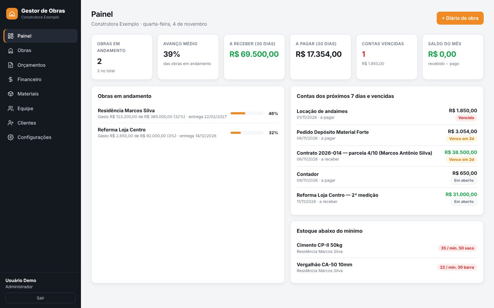
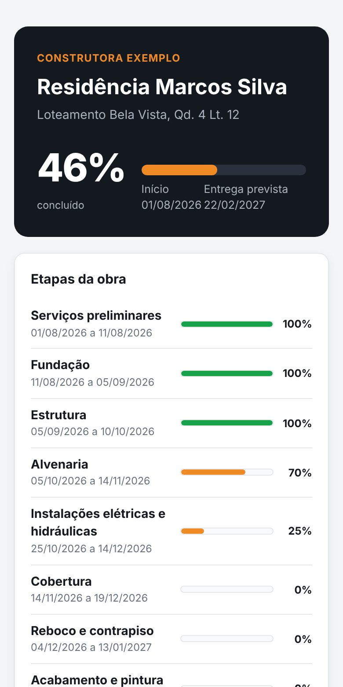
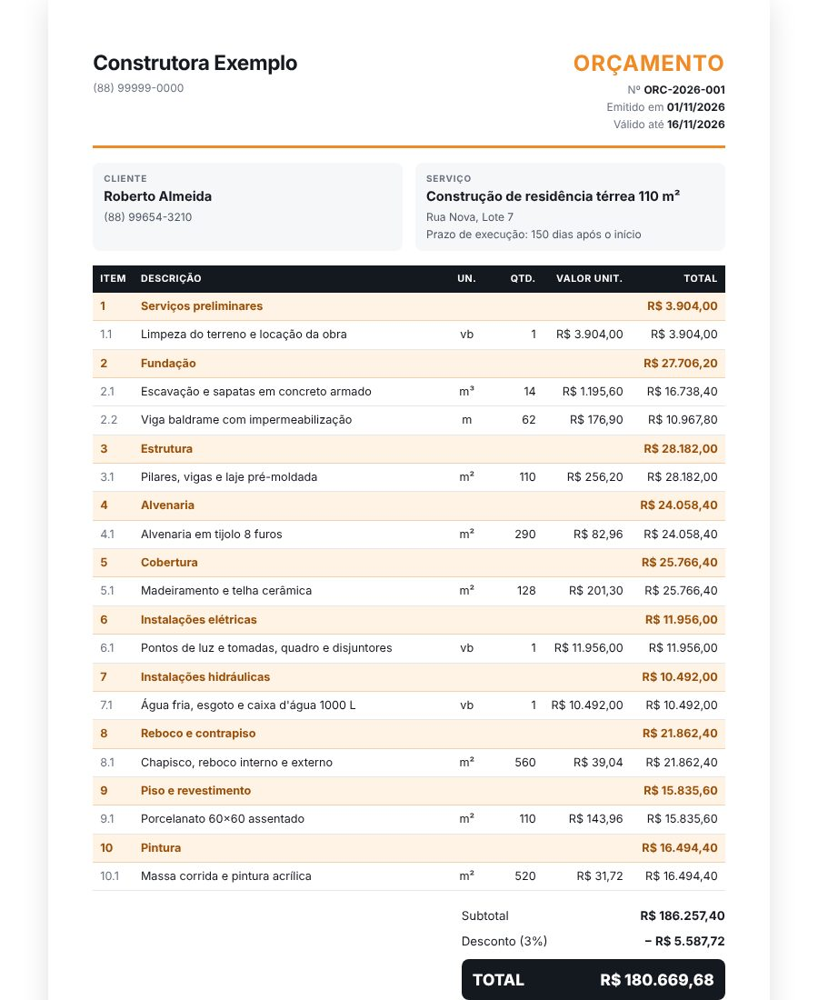
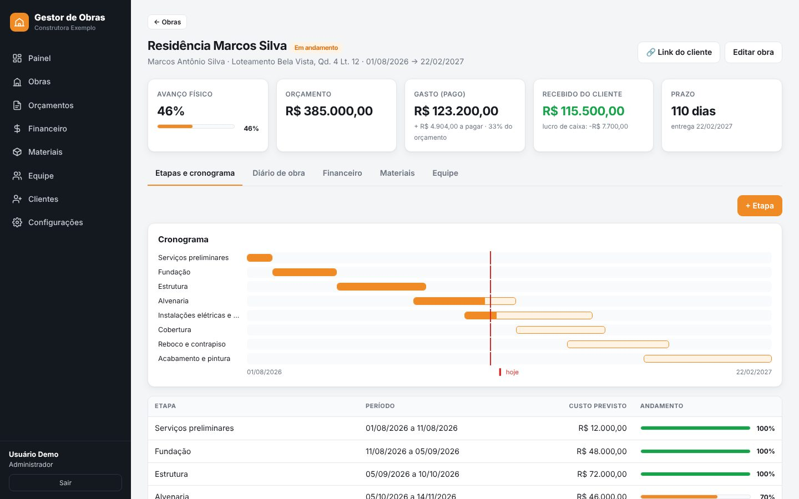

Obras, orçamentos em PDF, custos, materiais, equipe e clientes em um só lugar. Você sabe quanto cada obra está custando — e o seu cliente acompanha tudo pelo celular.


Quando o controle fica no caderno, na planilha e em mil conversas de WhatsApp, o dinheiro escapa sem ninguém perceber.
O gasto real só aparece no final — quando já não dá mais para corrigir.
Montar orçamento na mão leva dias, e quem responde primeiro fecha o serviço.
"Como está a obra?" — sem um jeito fácil de mostrar o andamento e as fotos.
Feito para quem vive no canteiro de obras, não para quem vive no escritório.
Etapas com % concluído, cronograma visual e alerta de atraso na entrega.
Itens por etapa, margem e desconto. Aprovou? Vira obra e contrato com um clique.
Registro do dia com foto tirada direto do celular, clima e equipe presente.
Contas a pagar e receber, parcelas do contrato e custo real × orçamento.
Estoque por obra, alerta de mínimo e pedido enviado ao fornecedor no WhatsApp.
Marque quem trabalhou no dia e pague as diárias em um clique, já lançando no custo.
Um link para o dono da obra acompanhar o andamento e as fotos — sem valores.
Engenheiro e mestre de obras usam sem ver o financeiro. Dados com backup.
Monte os itens por etapa com o seu custo, coloque a sua margem e o sistema calcula o preço do cliente e o seu lucro. Gere o PDF com a sua logo e mande no WhatsApp.

Cada compra, diária e conta paga entra no custo da obra certa. Você vê na hora se está dentro do orçamento — e ainda dá tempo de agir.

Mande um link pelo WhatsApp e o cliente vê o percentual concluído, as etapas e as fotos do diário. Menos ligação, mais confiança — e mais indicação.
Nada para instalar. Abre no navegador do computador ou do celular.
Nome da construtora, e-mail e senha. Teste grátis por 7 dias, sem cartão.
Ou faça o primeiro orçamento — ao aprovar, a obra é criada com as etapas.
Dê acesso ao engenheiro e ao mestre de obras para registrarem o dia a dia.
Sem limite de obras e sem cobrar por usuário.
Não. O Gestor de Obras funciona pelo navegador, no computador, no tablet ou no celular. É só entrar com seu e-mail e senha.
Sim. O mestre de obras registra o diário e tira a foto direto do celular, e as diárias da equipe são lançadas em poucos toques.
Não, se você não quiser. O perfil "Engenheiro / Mestre de obras" vê obras, diário, materiais e equipe, mas não vê valores nem contas.
Se gostar, você assina por R$ 149,90/mês e continua de onde parou, com todos os dados. Se não assinar, o acesso é pausado — nada é cobrado automaticamente.
Os dados ficam em servidores do Google (Firebase), cada construtora só enxerga as próprias informações, e você pode baixar uma cópia de tudo quando quiser.
Sim, sem limite. O painel mostra todas as obras em andamento lado a lado, com avanço e custo de cada uma.
7 dias grátis. Sem cartão. Sem instalar nada.